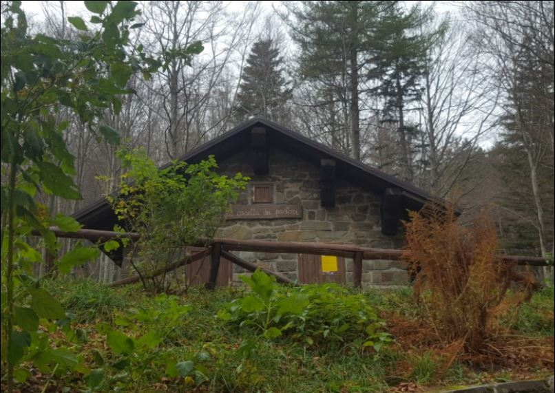
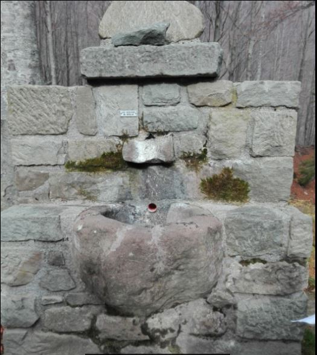
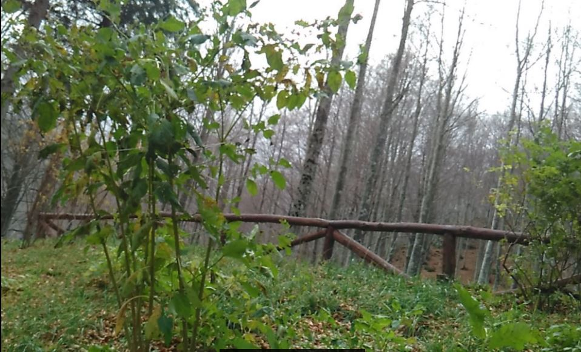

La Casetta del Pastore
La valorizzazione di un territorio passa necessariamente dalla sua storia. Esiste, infatti, un legame molto stretto tra l’ambiente naturale, con le sue caratteristiche fisiche e climatiche e le opere dell’uomo che, nel corso dei secoli ne hanno modificato il paesaggio.
La natura offre continuamente agli uomini ostacoli e opportunità, le abitazioni rurali della montagna pistoiese ne sono un tipico esempio.
«Ciò che seguita verso ponente, di là dal Mugello, per tutto il tratto dell’Appenino fino al confine di Modena, che resta a tramontana di Pistoia si chiama Montagna di Pistoja. Tale spazio irregolare e pieno di alti monti è diviso in profonde e scoscese Valli formate da fiumi diversi, cioè la Lima, la Pescia e l’Ombrone. La natura di questi luoghi porta che abbia inverni lunghi, crudi e nevosi, aria leggera, fresche fonti, ed amenità nella grande estate. Quasi tutti è coperto di boscaglia; vi son però dei terreni fertili in mezzo ai dirupi. Verso la cima son vaste faggete, sull’alto pascoli, e tutto il resto della pendice è coperto da castagni. […] Le case dell’alta montagna sono basse come capanne, co’ tetti di lastricciole o lavagne acuti assai, affin di regger le nevi» (descrizione di Marco Lastri risalente ai primi anni del XIX secolo in Stato fisico ed economico della Toscana in generale 1801-1803).
La "Casetta dei pastori" che abbiamo incontrato nel nostro percorso rappresenta un esempio tipico delle abitazioni rurali della montagna pistoiese, dal momento che le sue caratteristiche sono simili a quelle di altri edifici della zona che sono state censiti da un recente studio condotto dall’Università degli Studi di Firenze (Laura Cassi-Francesco Zan, Patrimonio rurale e mondo rurale, Pisa, Pacini Editore, 2013).
Di dimensioni contenute, la “Casetta dei pastori” presenta un aspetto modesto ma gradevole e in armonia con il contesto ambientale circostante. Le variazioni termiche che caratterizzano il clima della zona sono tali da rendere facilmente deteriorabile l’intonaco e, per tale ragione, le pareti esterne sono costituite da lastre di pietra che, molto probabilmente sono autoctone.
Un aspetto interessante di questo tipo di abitazione è costituito dal tetto spiovente inclinato verso i fianchi, tipico della media e alta montagna.
Dal punto di vista storico tale edifico viene ricordato per una terribile strage di pastori compiuta il 12 luglio 1944: una pagina triste della storia italiana che non ha risparmiato l’amenità di questi luoghi.
Oggi la “Casetta dei pastori” grazie al lavoro di molte forze, volontari ed Enti locali, fa parte del Patrimonio Agricolo Forestale della Regione Toscana.

La fonte
Di fronte alla Casetta del pastore c’è una fonte d’acqua. Spesso lungo i sentieri di montagna si trovano fonti che la maggior parte delle volte sono rifornite da sorgenti che sgorgano proprio in quel punto. Sono per lo più acque freschissime e oligominerali.

Atropa belladonna
La Belladonna è una pianta a fiore che appartiene alla famiglia delle Solanacee e come altre specie della famiglia contiene sostanze attive sul nostro sistema nervoso. Contiene infatti atropina che, usata come collirio, provoca la dilatazione della pupilla. Da questo e dai suoi frutti che possono essere addirittura letali deriva il nome. Cresce spontaneamente nelle zone montane e submontane fino ad un'altitudine di 1400 metri. Essa predilige i suoli calcarei ed i margini di boschi freschi e ombrosi come le faggete. Allo stato selvatico è presente in Europa centrale, Africa settentrionale, Asia occidentale e in Pakistan. in Italia si può incontrare nei boschi alpini e appenninici.